4.2 目录与文件
有了文件，还必须有办法把成千上万个文件组织起来、找得到、管得好——这就是目录要解决的问题。本节从文件控制块与索引节点出发，依次讨论目录结构的设计、文件的物理分配方式、文件的基本操作，最后落到文件共享与保护机制，知识点密集且环环相扣。学习本节前，请先带着三个问题：
- 目录管理的基本要求是什么？
- 在目录中查找某个文件可采用哪些方法？
- 单个文件的逻辑结构与物理结构之间是否存在制约关系？
4.2.1 目录的基本概念
现代计算机系统中要存储大量文件，必须借助文件目录对文件进行有效组织。文件目录本身是一种数据结构，负责记录每个文件的属性、在外存中的存储位置等元数据，使得检索文件时能够快速定位其物理地址。目录管理需要满足以下四项基本要求：
- 实现按名存取：用户只需提供文件名，系统即可自动定位该文件在外存中的位置——这是目录管理最基本的功能；
- 提高检索速度：通过合理组织目录结构加快查找过程，从而提升文件存取效率；
- 支持文件共享：在多用户系统中，允许多个用户共享同一个物理文件；
- 允许文件重名：不同用户可以对各自所属的文件使用相同的名字，以符合各自的命名习惯。
4.2.2 文件控制块和索引节点
为便于管理文件，系统引入了文件控制块（File Control Block，FCB）这一重要数据结构。
1. 文件控制块（FCB）
FCB 是存放控制文件所需各种信息的数据结构，用于实现按名存取。每个文件对应一个 FCB，而所有 FCB 的集合就构成文件目录（也称目录文件）。每当创建一个新文件，系统就为它建立一个 FCB，记录其各项属性。
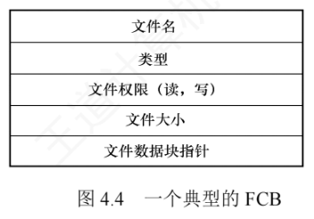
FCB 中主要包含三类信息：
- 基本信息：如文件名、物理位置、逻辑结构、物理结构等；
- 存取控制信息：包括文件主、核准用户和一般用户的访问权限；
- 使用信息：如文件创建时间、最后修改时间等。
2. 索引节点
当文件数量庞大时，传统 FCB 目录的问题就暴露出来了：查找文件时系统需逐块读入目录项并逐一比对文件名，而只有文件名匹配成功时才真正需要该文件的物理地址——也就是说，检索阶段除文件名之外的其他描述信息完全是"陪跑"的。为此，UNIX 等系统采用文件名与文件描述信息分离的设计：把描述信息单独组织成索引节点（inode），简称 i 节点；目录项则只由文件名 + 索引节点号（索引节点指针）构成。
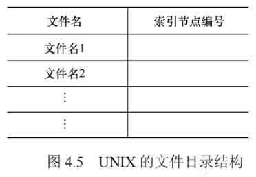
这样"瘦身"之后，检索效率能提升多少？看一个经典算例：
分解前（FCB 目录）：
FCB 大小 64B，盘块大小 1KB
→ 每个盘块可容纳 1KB ÷ 64B = 16 个 FCB（FCB 须连续存放）
→ 目录共 640 个 FCB，占 640 ÷ 16 = 40 个盘块
→ 顺序查找平均需启动磁盘 40 ÷ 2 = 20 次
分解后（文件名 + i 节点号）：
目录项仅 16B（14B 文件名 + 2B 索引节点号）
→ 每个盘块可容纳 1KB ÷ 16B = 64 个目录项
→ 目录占 640 ÷ 64 = 10 个盘块，查找目录平均读盘 10 ÷ 2 = 5 次
→ 目录检索的磁盘启动次数降至原来的 1/4为了兼顾持久存储与高效访问，索引节点被设计成两种形态：
（1）磁盘索引节点——存放在磁盘上，是文件的"永久档案"，每个文件有唯一的磁盘索引节点，主要包含：
- 文件主标识符：标识文件所属的用户或用户组；
- 文件类型：普通文件、目录文件或特殊文件；
- 文件存取权限：文件主、核准用户及一般用户的访问权限；
- 文件物理地址：通过 13 个地址项以直接或间接方式记录数据所在盘块编号；
- 文件长度：以字节为单位的文件实际大小；
- 文件链接计数：统计本文件系统中指向该文件的目录项（硬链接）数量；
- 文件存取时间：文件最近被访问、修改的时间，以及索引节点最近被修改的时间。
（2）内存索引节点——文件被打开时，对应的磁盘索引节点被载入内存，并附加运行时状态信息，在磁盘索引节点的基础上额外新增：
- 索引节点编号：在内存中唯一标识该节点；
- 状态：指示 i 节点是否被上锁或已被修改，便于缓存一致性管理；
- 访问计数：进程每访问一次加 1，访问结束减 1，用于判断节点是否可释放；
- 逻辑设备号：标识文件所属文件系统的逻辑设备，多文件系统环境中尤为关键；
- 链接指针：分别指向空闲链表与散列队列，便于内核调度与回收。
4.2.3 目录结构
1. 单级目录结构课外拓展
最简单的做法：整个文件系统只维护一张全局目录表，每个文件占一个目录项。
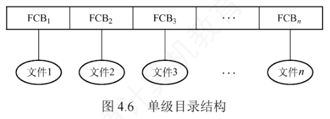
创建文件时先遍历整张目录表确认无同名文件，再新增一个 FCB 并填入属性；访问时按文件名找到 FCB，经合法性检查后执行操作；删除时先定位 FCB，回收其占用的存储空间，再清除该 FCB。单级目录虽然实现了按名存取，但查找效率低、不允许文件重名、难以支持文件共享，无法满足多用户环境，仅适用于早期单用户的简单文件系统。
2. 两级目录结构课外拓展
为克服单级目录的缺陷，把文件目录分成两层：主文件目录（MFD）和用户文件目录（UFD）。
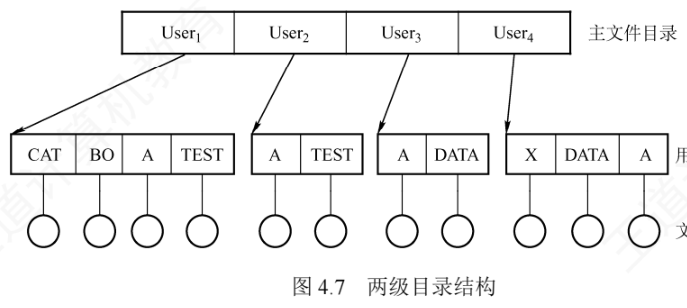
MFD 的每个目录项记录一个用户名及其 UFD 的存储位置；每个 UFD 则包含该用户所有文件的 FCB。用户访问文件时，系统只需在其专属 UFD 中查找。这既解决了不同用户间的文件重名问题，又通过隔离用户命名空间增强了安全性，检索效率也随之提升。但由于每个用户只有一个扁平的 UFD，无法对文件分类管理，组织复杂文件集合时灵活性不足。
3. 树形目录结构
把两级目录加以推广，就得到目前绝大多数操作系统（UNIX、Linux、Windows）采用的树形目录结构。
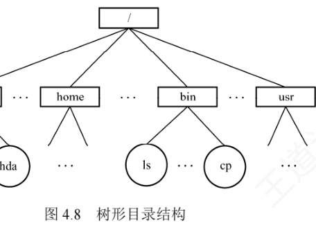
在树形结构中，用户通过路径名标识文件。路径名是一个字符串，由从起点到目标文件通路上所有目录名和文件名用分隔符"/"连接而成：
- 绝对路径：从根目录出发的路径，系统中每个文件的绝对路径是唯一的，如 Linux 中的"/dev/hda"；
- 相对路径：从当前目录（也称工作目录）出发的路径。当目录层次较深时，每次都从根逐级查找太费时间，因此系统为每个进程设置一个当前目录，访问通常以它为基准。例如当前目录为"/bin"时，"./ls"就是文件 ls 的相对路径，其中"."表示当前工作目录。
通常每个用户都有专属的当前目录，登录后系统自动切换到该默认目录（Linux 中由 /etc/passwd 文件记录），操作系统提供专门的系统调用（如 cd 命令所调用的接口）允许用户随时更改。
优点：便于文件分类，层次清晰，便于管理与保护——不同性质或归属的文件可分布在目录树的不同分支或子树中，还能对各节点设置独立的存取权限，实现精细化控制。缺点：查找一个文件需按路径名逐级访问中间目录节点，磁盘 I/O 次数较多，可能影响查询速度。
4. 无环图目录结构课外拓展
树形目录便于分类，但难以支持文件共享。为此，在树形结构的基础上引入指向同一节点的有向边，使目录结构演变为一个有向无环图。
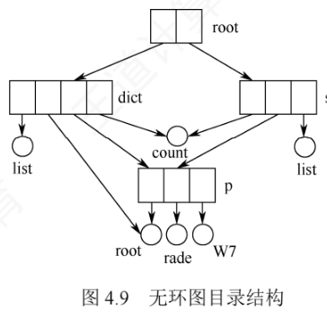
这种结构允许目录共享子目录或文件：同一个文件或子目录可以同时出现在两个或多个目录中，实现跨目录共享。但共享也给删除操作带来了麻烦——若某用户请求删除一个共享节点时系统直接将其物理删除，其他共享用户的后续访问就会失败。解决办法是为每个共享节点维护一个共享计数器：新增一条共享链时计数器加 1，收到删除请求时减 1；仅当计数器归零才真正删除该节点，否则只断开请求用户的那条共享链，节点继续保留给他人使用。无环图目录有效支持了灵活共享，代价是需要额外维护引用计数等共享状态，管理开销增加。
4.2.4 目录的操作
在理解文件系统的设计之前，先明确目录层面支持哪些基本操作——它们构成用户与文件系统交互的核心接口：
- 搜索：访问文件时在相应目录中查找对应的目录项。系统通常支持从根目录或当前工作目录出发，可用精确文件名或部分文件名检索；
- 创建文件：先检查当前目录中是否有同名文件，确认无重名后新增目录项，并初始化文件类型、权限、时间戳等属性；
- 删除文件：移除该文件在所属目录中的目录项，并回收其占用的数据块及元数据；
- 创建目录：在树形目录结构中创建子目录（UFD），用于组织个人文件与嵌套子目录，实现层次化管理；
- 删除目录：空目录可直接删除；非空目录有两种策略——①要求用户先手动清空目录内容（对子目录需递归删除），成空后再删；②允许直接删除，系统自动递归删除其中所有文件与子目录；
- 移动目录：把文件或子目录从原父目录迁移到新父目录下，原有目录项被转移，文件的完整路径名随之自动更新，而文件内容保持不变；
- 显示目录：列出目录中所有文件与子目录的名称，通常还显示文件大小、最后修改时间等属性；文件属性变化时其目录项也会同步更新；
- 改变目录：切换当前工作目录，可指定绝对路径或相对路径；未显式指定时系统通常默认返回用户的主目录。
4.2.5 目录实现课外拓展
访问文件时，操作系统根据路径名定位目录项，再由目录项中的信息找到文件的磁盘块。目录实现的核心目标是高效支持查找，主要有两种方法：
1. 线性列表
最简单的实现：用由"文件名 + 数据块指针"组成的线性列表充当目录。创建文件时先遍历目录确保无同名文件，再新增目录项；删除文件时按文件名查找并释放其占用的空间。为了重用被删除的目录项，常见策略有：把该项标记为未使用、将其挂入空闲链表，或把末尾项移到空位并缩短目录长度；若改用链表组织目录项，还能进一步降低删除操作的时间开销。线性列表实现简单，但查找效率低——目录规模越大，扫描开销越高。
2. 哈希表
根据文件名计算哈希值，以此索引到哈希表中的某个元素，该元素通常存放指向实际目录项的指针。哈希表的查找、插入、删除都具有很高的性能，但必须妥善处理哈希冲突（不同文件名映射到同一表元素的情况）。
4.2.6 文件的物理结构
文件的物理结构研究文件数据在磁盘上如何分布与组织，可从两个互补的视角理解：①文件分配方式——如何为文件分配磁盘块，属于对非空闲块的管理；②文件存储空间管理——如何跟踪和分配空闲磁盘块，属于对空闲块的管理（见 4.3 节）。
如同内存被划分为固定大小的页，磁盘也被划分为若干磁盘块，大小通常与内存页面一致，所有磁盘 I/O 都以块为单位在内存与磁盘间交换数据。
1. 连续分配
连续分配要求每个文件在磁盘上占有一组连续的块。磁盘地址本身具有线性顺序，这种布局使访问文件所需的寻道次数和寻道时间最小。
采用连续分配时，逻辑文件中的记录依次存入相邻物理块，目录项记录起始块号和所占总块数。设文件长 \(n\) 块、从块 \(b\) 开始存放，则文件占据块 \(b, b+1, b+2, \dots, b+n-1\)；要访问第 \(i\) 块，直接计算并访问块 \(b+i-1\) 即可，无须任何查找。
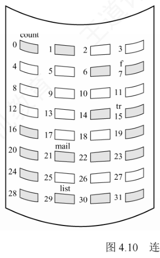
- 优点：①同时支持顺序访问和直接访问；②顺序访问高效且速度快——文件所占的块通常位于一条或少数几条相邻磁道上，磁头移动距离最小。
- 缺点：①必须为文件分配连续存储空间，与内存连续分配类似，易产生大量外部碎片；②需预先知道文件长度，难以支持文件动态增长——若强行扩展，可能覆盖物理上相邻的其他文件；③为维持逻辑顺序，删除或插入记录时往往要物理移动后续记录，开销较大。
2. 链接分配
链接分配采用离散方式分配磁盘块，主要优点：①消除外部碎片，显著提高磁盘空间利用率；②可动态分配盘块，无须预知文件大小；③文件的插入、删除和修改十分便捷。按指针存放位置不同，分为隐式链接和显式链接。
（1）隐式链接
每个文件对应一个由磁盘块构成的链表，各块可分散在磁盘任意位置。目录项中记录文件第一块和最后一块的指针（盘块号）；除最后一块外，每个盘块中都存有指向下一个盘块的指针，这些指针对用户完全透明。
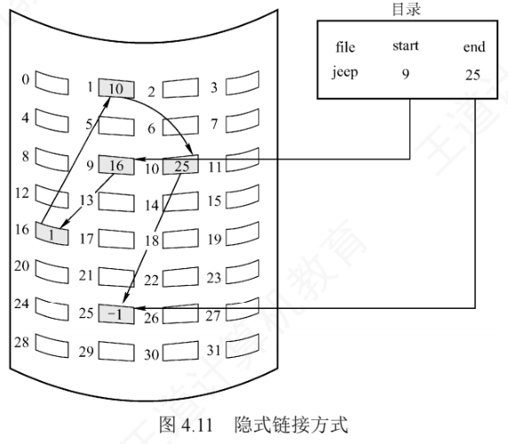
隐式链接的缺点：①只支持顺序访问——要访问文件的第 \(i\) 块，必须从首块开始逐个跟随指针遍历到第 \(i\) 块，随机访问效率极低；②可靠性差——链中任一指针损坏，整个链断开，后续数据无法访问；③每个盘块都要腾出空间存指针，消耗一定存储空间。
为缓解这些问题，可引入簇（cluster）：把若干连续盘块组合成一个簇，作为基本的分配单位，文件的分配与链接均以簇为单位进行。这样指针数量大幅减少，既降低存储开销，又显著缩短链式查找时间，提升 I/O 性能；代价是可能产生内部碎片——当文件大小不是簇大小的整数倍时，最后一个簇中剩余的空间无法被其他文件利用。
（2）显式链接（文件分配表 FAT）
显式链接把链接各物理块的指针集中存放在内存中的一张全局表中——整个文件系统仅设一张，称为文件分配表（File Allocation Table，FAT）。FAT 的每个表项对应一个磁盘块，存放指向下一个盘块的指针；文件目录项因此只需记录起始块号，后续块号依次查 FAT 即可。
例如某磁盘共 100 个盘块，存放两个文件："aaa" 占 3 块，链接顺序 2→8→5；"bbb" 占 2 块，链接顺序 7→1；其余盘块空闲。
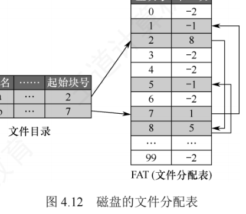
不难看出，FAT 的表项与所有磁盘块一一对应，通常用特殊值 \(-1\) 标记文件最后一块，用 \(-2\) 表示该盘块空闲（也可指定为 \(-3\)、\(-4\) 等）。因此 FAT 不仅记录了文件的链式结构，还同时标识了空闲盘块——系统可直接利用 FAT 管理磁盘空闲空间：某进程请求分配一个盘块时，只需在 FAT 中找到一个值为 \(-2\) 的表项，把对应盘块分配给它即可。
- 优点：①支持顺序访问，也支持直接访问——要访问第 \(i\) 块，无须依次遍历前 \(i-1\) 块，在 FAT 中顺着链"数块号"即可；②FAT 在系统启动时即载入内存，此后检索都在内存中完成，显著提升查找速度并大幅减少磁盘 I/O。
- 缺点：FAT 需要常驻内存，磁盘容量越大，表越大，内存开销越显著。
3. 索引分配
（1）单级索引分配
打开文件时，其实只需把该文件占用的盘块号调入内存，无须加载整个 FAT。于是可以把每个文件的所有盘块号集中存放于一处：系统为每个文件分配一个专用的索引块（索引表），把分配给它的所有盘块号记录其中，访问文件时一次性载入。
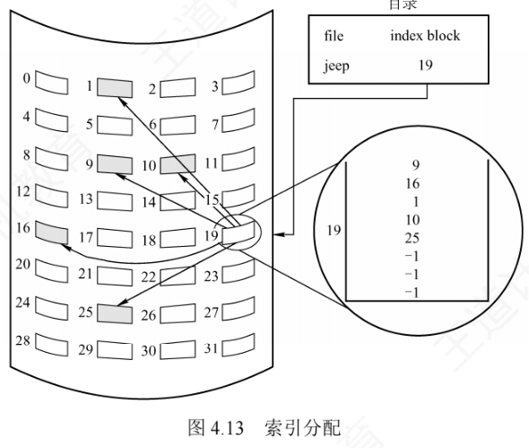
能支持多大的文件？算一算（每步带单位）：
盘块大小 4KB，每个盘块号占 4B
→ 一个索引块可容纳 4KB ÷ 4B = 1024 个盘块号
→ 单级索引支持的最大文件 = 1024 × 4KB = 4MB- 优点：①支持高效的直接访问——要访问第 \(i\) 块，只需读索引块中第 \(i\) 项即得盘块号；②不产生外部碎片，文件盘块可离散分配。
- 缺点：引入额外存储开销——每个文件必须配备一个索引块。文件很小（仅占几个盘块）时也要占一个完整索引块，利用率极低；文件很大时，盘块号超出单个索引块容量，虽可用链式指针把多个索引块链接起来，但效率低下。
（2）多级索引分配
文件大到索引块很多时，可以给索引块再建一级索引——主索引，主索引表中依次存放各二级索引块的盘块号，形成二级索引分配。其思想与内存管理中的多级页表高度相似：访问数据时，先通过主索引定位二级索引块，再由二级索引块找到目标数据块；文件更大时还可扩展为三级、四级索引。
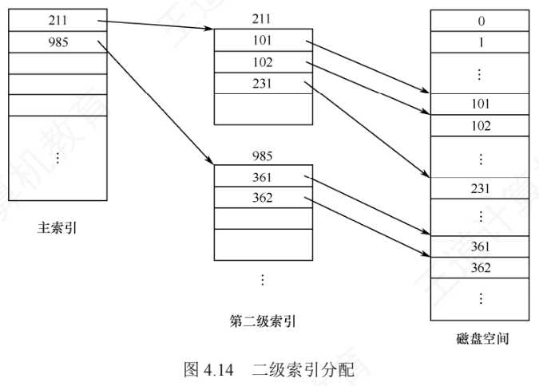
仍取盘块大小 4KB、每个盘块号占 4B
→ 一个索引块容纳 1024 个盘块号
→ 两级索引支持的最大文件 = 1024 × 1024 × 4KB = 4GB多级索引的优点是显著提升大型文件的可扩展性与查找效率；缺点是访问一个盘块所需的磁盘 I/O 次数随索引级数增加而增多——若文件系统只采用多级索引，那么即使访问小文件的一个盘块也要多次读索引块，整体 I/O 性能不理想。
（3）混合索引分配
为兼顾小、中、大乃至特大型文件的访问效率，应根据文件大小动态选用最合适的策略，在空间开销与访问性能之间取得平衡——这就是混合索引分配。UNIX 系统正是采用这种策略，其索引节点中共设 13 个地址项 i.addr(0)～i.addr(12)：
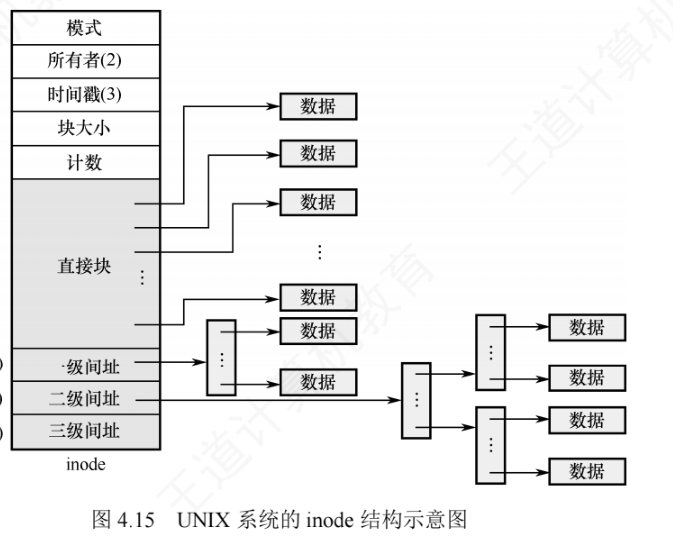
设每个盘块大小为 4KB，每个盘块号占 4B，则一个索引块可容纳 \(4\text{KB}/4\text{B} = 1024\) 个盘块号。各级地址项的寻址能力逐级"增量"扩大：
- 直接地址：i.addr(0)～i.addr(9) 共 10 个直接地址项，每项直接存放一个数据块的盘块号，无须额外读索引结构，提升小文件的检索速度。可表示 \(10 \times 4\text{KB} = 40\text{KB}\)，即文件不超过 40KB 时全部盘块号都在 inode 中；
- 一次间接地址：i.addr(10) 指向一个一次间址块（索引块），其中存放数据块的盘块号。最多可寻址 \(1\text{K} \times 4\text{KB} = 4\text{MB}\)。直接地址 + 一次间址合计最大文件长度 \(4\text{MB} + 40\text{KB}\)；
- 二次间接地址：i.addr(11) 指向主索引块，主索引块的每一项又指向一个一次间址块，每个一次间址块再指向 1024 个数据块，最多可寻址 \(1\text{K} \times 1\text{K} \times 4\text{KB} = 4\text{GB}\)。直接 + 一次 + 二次合计最大文件长度 \(4\text{GB} + 4\text{MB} + 40\text{KB}\)；
- 三次间接地址：i.addr(12) 再套一层，最多可寻址 \(1\text{K} \times 1\text{K} \times 1\text{K} \times 4\text{KB} = 4\text{TB}\)。四者全部用上时，最大可表示的文件长度为 \(4\text{TB} + 4\text{GB} + 4\text{MB} + 40\text{KB}\)。
4.2.7 文件的操作
文件是一种抽象数据类型，要正确定义它，就得明确可对它执行哪些操作。操作系统通过一系列系统调用实现文件的创建、删除、读/写、打开和关闭。
1. 文件的基本操作
（1）创建文件
创建文件涉及元数据分配、存储空间预留与目录注册等多个步骤：
- 合法性与权限校验：检查文件名是否合法、是否与同目录下已有文件重名，并验证用户对目标目录是否有写权限；任一条件不满足则创建立即终止；
- 分配索引节点：从空闲 inode（或 FCB）池中取一个空闲项，初始化文件类型、初始大小、访问权限、时间戳、物理块指针等元数据，并标记为已占用；
- 分配磁盘块：按文件预估大小从空闲磁盘块管理结构中分配物理块，并把块地址记录进 inode；
- 在目录中新建目录项：格式为〈文件名, 索引节点号〉，使文件可被检索；
- 更新文件系统元数据：同步更新空闲 inode 表、空闲磁盘块结构、目录大小及修改时间等；
- 打开并返回文件描述符（可选）：若创建后立即打开，则在进程的打开文件表中创建表项，分配文件描述符并初始化读/写指针。
（2）删除文件
- 路径解析与定位：按路径名逐级查找目录，定位目标文件的目录项，取得其 inode（或 FCB），并验证用户对文件所在目录的写权限；
- 检查使用状态与硬链接计数：若文件正被打开，部分系统会延迟物理删除，待所有引用关闭后再回收资源；若硬链接计数（见 4.2.8 节）大于 1，则仅删除当前目录项并把计数减 1，不回收 inode 与磁盘块；只有计数为 1 时才走完整的删除流程；
- 移除目录项：使文件在用户视角下"消失"，完成逻辑删除；
- 释放索引节点：链接计数降至 0 时，把 inode 标记为空闲并归还空闲管理结构，其元数据彻底失效；
- 释放磁盘块：根据 inode 中的块指针，把所有数据块和索引块归还空闲磁盘块管理结构；
- 释放内存临时资源（可选）：如对应的缓冲区、打开文件表项及内核文件对象等；
- 更新文件系统元数据：同步更新目录大小、空闲 inode 表及空闲块结构，确保一致性。
（3）读文件
先按文件名在目录中查找目录项，取得索引节点号，从而定位文件在外存中的数据块；再依据当前读指针的位置从指定块读取数据，并更新读指针。
（4）写文件
同样先通过文件名查找目录项、取得索引节点号以定位外存数据块，然后按当前写指针的位置把数据写入相应块并更新写指针。若写入超出当前已分配的空间，系统会动态分配新的磁盘块，并更新 inode（或 FCB）中的块指针。
2. 文件的打开与关闭
若每次读/写都从检索目录开始，开销会非常大。为此，多数操作系统规定：用户首次访问某文件时必须先用系统调用 open 将其打开。系统维护一个称为打开文件表的数据结构记录当前活跃的文件信息。所谓"打开"，是指系统根据文件路径定位到目录项后，把关键信息载入内存，在打开文件表中创建一个表目，并把该表目的索引号（文件描述符）返回给用户。此后再操作该文件，只需提供文件描述符，系统直接从内存获取信息，显著降低目录检索开销。
为兼顾效率与管理灵活性，现代操作系统采用两级打开文件表结构：
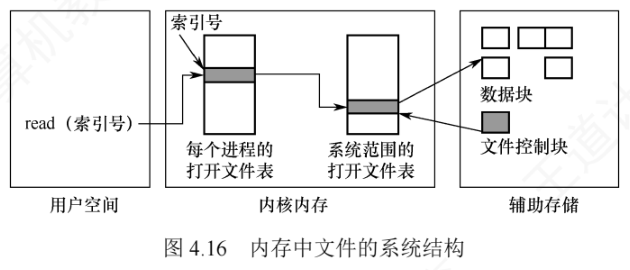
- 系统打开文件表：全局共享一份，存放与进程无关的文件属性，如磁盘位置、文件大小、访问时间等；每项含一个打开计数器（Open Count），记录有多少进程打开了该文件；
- 进程打开文件表：每个进程独有一份，记录进程私有的访问状态，如当前读/写指针、访问权限及文件打开模式；表中每项指向系统打开文件表的对应项，实现"资源共享 + 独立控制"的统一。
文件打开的完整过程如下：
- 根据用户提供的文件路径逐级遍历目录，把所需目录文件从磁盘载入内存，定位目标文件的目录项；
- 提取其索引节点编号，以此为关键字在系统打开文件表中查找；
- 若未找到，从磁盘读取该索引节点至内核缓冲区，在系统表中创建新项并把打开计数初始化为 1；若已存在，仅把该项的打开计数加 1；
- 在发起请求进程的进程打开文件表中分配一个新表项，记录其指向系统表项的索引；
- 把该表项的索引号作为文件描述符返回给用户进程，供后续读/写等操作使用。
文件不再使用时，用户调用 close 关闭它：系统从该进程的打开文件表中删除对应项，并把系统打开文件表中相应项的打开计数器减 1；一旦计数器减至 0，说明已无任何进程引用该文件，系统便可安全删除其在系统表中的项并释放相关资源。
open() 系统调用，后续所有文件操作［包括 read()、write()、lseek()、close() 等］均不再使用文件名，而是通过文件描述符进行。这一机制是文件管理的核心考点。每个被打开的文件在系统中都关联以下关键信息：
- 文件指针：系统为每个进程维护独立的当前读/写位置指针。它对进程是私有的，必须与磁盘上共享的文件属性分离，保存在进程的打开文件表中；
- 文件打开计数：记录当前打开该文件的进程数量，只有最后一个进程调用
close()后，系统才真正释放其在系统打开文件表中的项； - 文件磁盘位置：多数文件操作涉及修改磁盘数据，系统把文件在磁盘上的位置信息缓存在内存中，避免每次操作都重新解析路径并读取元数据；
- 访问权限：进程打开文件时需指定访问模式（只读、读/写、追加、创建等），该信息保存在进程的打开文件表中，操作系统据此判断是否允许后续 I/O 请求。
4.2.8 文件共享
文件共享让多个用户访问同一个物理副本。若缺乏共享机制，每个需要该文件的用户都得持有独立副本，既浪费存储又易造成数据不一致。前文的无环图目录结构可用于实现共享，但若建立链接时把被共享文件的盘块号复制到相应目录项中，那么当某用户向文件追加数据并分配新盘块时，新增盘块只出现在其操作所对应的目录里，对其他用户不可见——这样并没实现真正的共享。真正的共享方案有两种：
1. 基于索引节点的共享方式（硬链接）
硬链接是一种基于索引节点的共享机制：文件的物理地址和属性信息不再放在目录项中，而是集中存放在索引节点内；目录项仅包含文件名及指向该索引节点的指针。索引节点中有一个链接计数 count（引用计数），记录当前指向它的目录项数量。
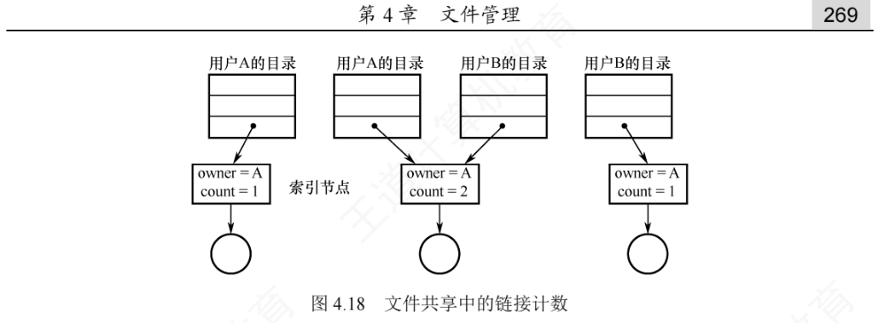
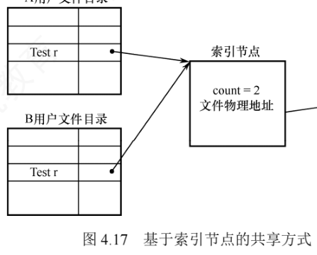
用户 A 创建新文件时即成为文件拥有者，系统为其创建索引节点并把 count 置为 1；用户 B 要共享该文件时，系统在 B 的目录中新增一个目录项并设好指向该索引节点的指针，count 增至 2，但拥有者仍是 A。那么，A 不再需要该文件时能直接删除吗？不能。若删除操作连带移除索引节点，B 的指针就会悬空，而 B 可能正在对该文件执行写操作，操作会中断失败。因此 A 只应删除自己的目录项，并把 count 减 1；只要 count > 0，文件及其索引节点就保留，B 可继续使用；仅当 count = 0 时，系统才真正释放该文件及其索引节点。
2. 利用符号链实现文件共享（软链接）
为使用户 B 共享用户 A 的文件 F，系统可创建一个 LINK 类型的新文件 L，写入 B 的目录中，从而建立 B 的目录与文件 F 之间的链接。文件 L 的内容只有一个东西——被链接文件 F 的路径名。这种方式称为符号链接，也称软链接，功能类似 Windows 的快捷方式：B 访问 L 时，操作系统识别出它是 LINK 类型，便按其中记录的路径名逐级查找定位到 F，再对 F 执行读/写。
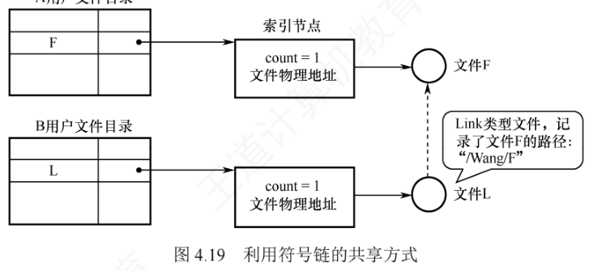
符号链方式下，只有文件拥有者持有指向其索引节点的指针，其他共享用户只保存路径名。因此即使拥有者删除了 F，也不会导致其他用户的指针悬空——其他用户再通过符号链访问时系统返回访问失败，此时安全地删掉这个符号链即可，不会引发任何问题。代价是：每次访问都要按路径名逐级遍历目录直至定位目标文件的索引节点，可能涉及多次磁盘读取，访问开销大；且符号链本身也是独立文件，其索引节点同样占用磁盘空间。好处是：利用符号链实现网络文件共享时，只需记录文件所在机器的网络地址 + 文件路径名即可。
两种共享方式对比总结如下：
| 比较项 | 硬链接（基于索引节点） | 软链接（符号链） |
|---|---|---|
| 共享的实现 | 多个目录项指向同一个索引节点，count 记录链接数 | 新建 LINK 类型文件，内容为被共享文件的路径名 |
| 访问共享文件的过程 | 经目录项指针直接找到索引节点，速度快 | 先读符号链文件，再按路径逐级查找目录，可能多次读盘，速度慢 |
| 拥有者删除文件后 | 仅删其目录项，count 减 1；只要 count > 0 文件仍在，其他用户可继续使用 | 文件被真正删除，其他用户按路径访问失败，可安全删除符号链 |
| 空间开销 | 索引节点中多一个链接计数字段，开销很小 | 符号链是独立文件，占用索引节点和磁盘空间 |
| 适用范围 | 依赖索引节点，限于同一文件系统内 | 记录网络地址 + 路径名即可实现网络文件共享 |
可以这样概括：文件共享要"软硬"兼施——硬链接是多个目录项指向同一个索引节点，只要还有一个指针存在，索引节点就不会被删除；软链接是保存到达共享文件的路径，访问时按路径查找。可见硬链接的查找速度通常优于软链接，因为它直接通过指针访问。
4.2.9 文件保护
为防止文件在共享中被意外破坏或被未授权用户篡改，文件系统必须控制用户访问文件的行为，明确哪些用户可对文件执行读/写、执行等操作。常见实现方式有口令保护、加密保护和访问控制三类：口令与加密主要用于防止他人非法获取或窃取文件内容，访问控制则用于精细管理用户对文件的具体访问权限。
1. 访问类型
文件保护通常通过限制用户可执行的访问类型来实现，主要受控操作包括：
- 读：从文件中读取数据；
- 写：向文件写入或修改数据；
- 执行：把文件加载进内存并运行；
- 添加：在文件末尾追加新数据而不覆盖原有内容；
- 删除：移除文件并释放其占用的存储空间；
- 列表清单：列出目录中文件的名称及其属性。
系统还可对重命名、复制、编辑等高层操作加以控制，但这些功能通常由应用程序调用系统调用来实现，真正的保护机制只在底层提供——例如复制文件本质上是由一系列"读"操作完成的，用户只要拥有读权限，便隐含具备了复制和打印的能力。
2. 访问控制
实现访问控制最常用的方法是按用户身份管理权限，最普遍的机制是为每个文件和目录附加一个访问控制列表（Access-Control List，ACL），明确指定各用户名及其被允许的访问类型。优点是支持灵活而复杂的访问策略，缺点是列表长度不可预知，带来复杂的空间管理开销。为此，现代系统常采用精简的 ACL，把用户划为三类：
- 拥有者：创建文件的用户；
- 组：一组需要共享该文件且具有相似访问需求的用户；
- 其他：系统中除拥有者和同组用户之外的所有用户。
每种访问类型用一个二进制位表示，因此只需一个 \(3 \times 4\) 位的矩阵即可完整描述三类用户的访问权限。创建文件时，系统把文件拥有者的用户名及其所属组名记录在该文件的 FCB 中；用户访问文件时按优先级顺序匹配身份：是拥有者则授予拥有者权限，与拥有者同组则授予组权限，否则仅授予其他用户的权限。
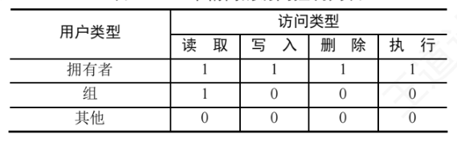
除 ACL 外，口令和密码（加密）也是常见的辅助性保护手段：
- 口令：用户创建文件时设定口令，系统将其存入 FCB 并告知获准共享的其他用户，访问时须提供正确口令。时空开销小，但口令通常以明文或弱保护形式存于系统内部，安全性较低；
- 密码（加密）：用户对文件内容加密，访问时用密钥解密。保密性强且不额外占用元数据空间，但加解密引入计算开销。
4.2.10 本节小结
开头提出的三个问题，答案如下：
1）目录管理的基本要求是什么？①实现"按名存取"，这是目录管理最基本的功能；②提高目录检索速度，加快文件存取；③为支持安全共享，目录需提供访问控制信息，管理不同用户对文件的使用权限；④支持重名，允许不同用户为各自的文件使用相同名称。
2）在目录中查找某个文件可采用哪些方法？可采用线性列表法或哈希表法。线性列表法把文件名组织成线性表，查找时依次与各表项比较；若文件名有序，还可用折半查找，但插入新文件时要维护有序性，带来额外开销。哈希表法通过哈希函数把文件名映射为指向目录项的指针，查找迅速，但需妥善处理哈希冲突。
3）单个文件的逻辑结构与物理结构之间是否存在制约关系？逻辑结构是用户可见的文件组织形式，物理结构是文件在存储器上的实际存放方式，与存取方法及存储介质特性密切相关。二者没有直接制约关系，但物理结构选择不当，就难以体现逻辑结构的特点——例如逻辑上为顺序结构的文件若采用隐式链接的物理结构，即使理论上能快速定位某条记录，实际仍要在磁盘上逐块查找。
学到这里应当体会到：现代操作系统的设计中处处可见面向对象思想的影子。本章的"文件"实质上是一种抽象数据类型——面对任何一种数据结构，自然要关注它的逻辑结构、物理结构和所支持的操作，文件也不例外。